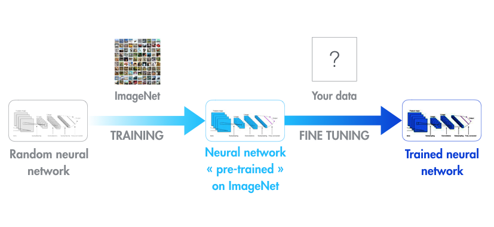
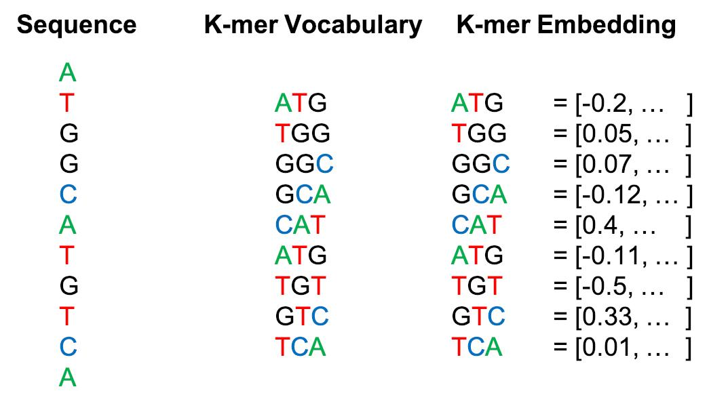

<!doctype html>
<html lang="en">
    <head>
        <meta charset="utf-8">
        <meta name="viewport" content="width=device-width, initial-scale=1.0, maximum-scale=1.0, user-scalable=no">

        <title>What Can You Learn from Fast.ai NLP?</title>
        <link rel="stylesheet" href="./css/reveal.css">
        <link rel="stylesheet" href="./css/theme/moon.css" id="theme">
        <link rel="stylesheet" href="./css/highlight/zenburn.css">
        <link rel="stylesheet" href="./css/print/paper.css" type="text/css" media="print">


    </head>
    <body>

        <div class="reveal">
            <div class="slides"><section  data-markdown><script type="text/template">
## Intro

Scott Mueller

###### smueller.tampa.ai@gmail.com
</script></section><section  data-markdown><script type="text/template">## Tampa.ai

Looking for Presenters
</script></section><section  data-markdown><script type="text/template">## What Can You Learn from Fast.ai NLP? 

https://meanderingstream.github.io/what_can_fastai_nlp

https://github.com/meanderingstream/what_can_fastai_nlp</script></section><section  data-markdown><script type="text/template">## Fast.ai NLP

* Top-down approach

* Code focused vs. Math-first

https://www.fast.ai/2019/07/08/fastai-nlp/

https://github.com/fastai/course-nlp
</script></section><section  data-markdown><script type="text/template">## Traditional NLP

* Singular Value Decomposition (SVD)
* Non-negative Matrix Factorization (NMF)
* Naive Bayes Sentiment Analysis
* Randomized Singular Value Decomposition **
</script></section><section  data-markdown><script type="text/template">## Computer Vision Transfer Learning

* ImageNet Model

* Fine Tune for Target Problem

[4]
</script></section><section  data-markdown><script type="text/template">## Transfer Learning for Vision

[New Model Modified from Existing Vision Model](./nbs/review-cv-transfer.pdf)
</script></section><section  data-markdown><script type="text/template">## Neural Net NLP

* Language Model
* Transfer Learning for Text
* seq2seq translation
* Attention
* Transformer</script></section><section  data-markdown><script type="text/template">## Language Model

the quick brown _______

|

Train on self-supervised, easy to capture, text dataset

Any text documents will work

Like wikitext-103</script></section><section  data-markdown><script type="text/template">## Text Transfer Learning

* New Language Model (LM) Modified from Existing LM 

* Add Classifier

[NLP Transfer learning - quick example](./nbs/review-nlp-transfer.pdf)
</script></section><section  data-markdown><script type="text/template">## More Detailed Example: NLP Transfer Learning

[NLP Transfer learning](./nbs/5-nn-imdb.pdf)

* Counting Bottles on Shelf 
</script></section><section  data-markdown><script type="text/template">## State of the Art Tradeoff

* Bigger Corpuses

* More Parameters

* Bigger Memory, More Processing</script></section><section  data-markdown><script type="text/template">## Seq2Seq Translation

[Translations](./nbs/7-seq2seq-translation.pdf)
</script></section><section  data-markdown><script type="text/template">## Transformer Translation

[Transformer Translation](./nbs/8-translation-transformer.pdf)
</script></section><section  data-markdown><script type="text/template">## Bias and Ethics

</script></section><section  data-markdown><script type="text/template">## How could you use NLP?

Text portion of Insurance Claim, any hint of a fall in hospital?

Chat History, problem chats that need supervisor attention</script></section><section  data-markdown><script type="text/template">## Genomics

[7]
https://github.com/kheyer/Genomic-ULMFiT</script></section><section  data-markdown><script type="text/template">[7]
</script></section><section  data-markdown><script type="text/template">[7]
</script></section><section  data-markdown><script type="text/template">Questions?
</script></section><section  data-markdown><script type="text/template">
[KnowFalls.com](https://www.KnowFalls.com/)

Fall Prevention Focus</script></section></div>
        </div>

        <script src="./lib/js/head.min.js"></script>
        <script src="./js/reveal.js"></script>

        <script>
            function extend() {
              var target = {};
              for (var i = 0; i < arguments.length; i++) {
                var source = arguments[i];
                for (var key in source) {
                  if (source.hasOwnProperty(key)) {
                    target[key] = source[key];
                  }
                }
              }
              return target;
            }

            // Optional libraries used to extend on reveal.js
            var deps = [
              { src: './lib/js/classList.js', condition: function() { return !document.body.classList; } },
              { src: './plugin/markdown/marked.js', condition: function() { return !!document.querySelector('[data-markdown]'); } },
              { src: './plugin/markdown/markdown.js', condition: function() { return !!document.querySelector('[data-markdown]'); } },
              { src: './plugin/highlight/highlight.js', async: true, callback: function() { hljs.initHighlightingOnLoad(); } },
              { src: './plugin/zoom-js/zoom.js', async: true },
              { src: './plugin/notes/notes.js', async: true },
              { src: './plugin/math/math.js', async: true }
            ];

            // default options to init reveal.js
            var defaultOptions = {
              controls: true,
              progress: true,
              history: true,
              center: true,
              transition: 'default', // none/fade/slide/convex/concave/zoom
              dependencies: deps
            };

            // options from URL query string
            var queryOptions = Reveal.getQueryHash() || {};

            var options = {"transition":"fade"};
            options = extend(defaultOptions, options, queryOptions);
        </script>


        <script>
          Reveal.initialize(options);
        </script>
    </body>
</html>
